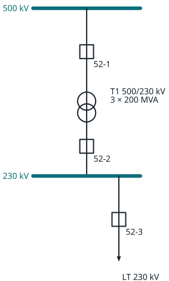
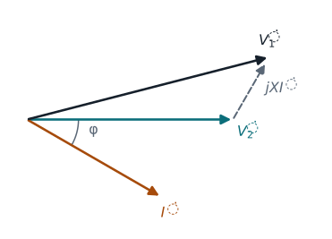
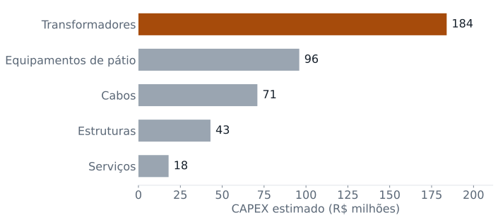

Exemplo da skill · dados fictícios
Reforço da SE Fictícia 500/230 kV cabe no orçamento se o transformador for comprado primeiro
Engenharia de PlanejamentoReunião de decisão17/11/2026
Ideia central
Antecipar a compra do transformador reduz o risco de prazo do reforço inteiro
18meses
Prazo típico de fabricação do transformador, o item mais longo da obra (valor fictício).
Configuração
O reforço acrescenta um transformador entre as barras de 500 e 230 kV
- Banco T1 de 3 × 200 MVA
- Dois disjuntores novos: 52-1 e 52-2
- Barra de 230 kV sem ampliação

Processo
A aprovação técnica corre em paralelo à negociação e não atrasa a equalização
flowchart LR
A[BOQ da engenharia] --> B[RFP aos fornecedores]
B --> C[Propostas R0]
C --> D{Aprovação técnica}
C --> E[Negociação]
D -->|aprovada| F[Equalização]
E --> F
F --> G[CAPEX do lance]
Fundamento
A potência que o banco entrega depende da tensão e da impedância vistas pela barra
\bar S = \dot V\,\dot I^{*} = P + jQ
P = \frac{V_1 V_2}{X}\,\sin\delta
- \bar S
- potência complexa (VA)
- \dot V,\ \dot I
- fasores de tensão e corrente
- X
- reatância série (Ω)
- \delta
- ângulo entre V_1 e V_2
Fasores
Com carga indutiva, a tensão na fonte precisa ser maior que na carga
- A corrente fica atrás da tensão
- A queda jX\dot I é perpendicular à corrente
- |\dot V_1| > |\dot V_2|: regular a tensão

Modelo
Para estudo de regulação, a linha curta vira uma impedância série
- Capacitância desprezada abaixo de ~80 km
- \dot V_1 = \dot V_2 + (R + jX)\,\dot I
Orçamento
Transformadores concentram quase metade do CAPEX estimado

Comparação
Comprar o transformador primeiro custa 2% a mais e tira 6 meses do caminho crítico
| Estratégia | CAPEX (R$ mi) | Prazo (meses) | Risco |
|---|---|---|---|
| Pacote único | 412 | 30 | médio |
| Transformador antecipado | 420 | 24 | baixo |
| Por lote de categoria | 405 | 33 | alto |
Decisão pedida
Aprovar a RFP do transformador nesta semana, separada do restante do pacote.
Próximo passo: emitir a RFP até 24/11 e trazer as propostas R0 na reunião de 15/12.